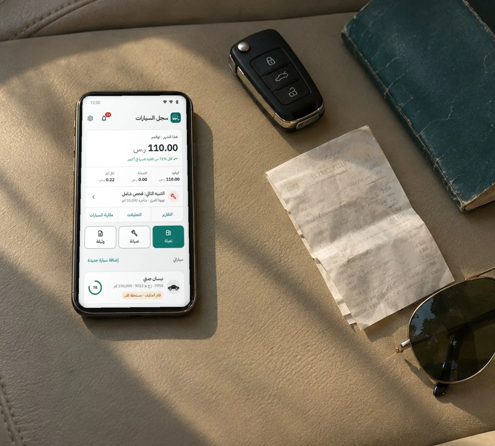

CarLog يحفظ لك الجواب، ومعه كل تعبئة بنزين، وتاريخ انتهاء الاستمارة والتأمين والفحص الدوري. ثم يذكّرك بالقادم قبل أن يفوت: بالكيلومتر للصيانة، وبالتاريخ للوثائق.
مجانيPremium بشراء واحدبلا حساب ولا إعلاناتAndroid 7 وما بعده

084870
كمالزيت بعد 130 كم
23نوع صيانة جاهز بفترته، والزيت كل 5,000 كم
4وثائق جاهزة: الاستمارة والفحص الدوري والتأمين والرخصة
19عملة، والكيلومتر أو الميل
6لغات، والعربية أولها
0إعلانات وحسابات وأدوات تتبّع
01الصيانة
كل زيارة للورشة سطر في الدفتر.
تختار ما عُمل للسيارة، فتُملأ فترته وحدها: الزيت 5,000 كم أو ستة أشهر، وفلتر الهواء 20,000 كم. وإن كان كتيّب وكالتك يقول غير ذلك، فعدّل الفترة لهذه السيارة وحدها.
زيارة بعدة بنودزيت وفلتر وفحمات في فاتورة واحدة، بسعر لكل بند أو بمبلغ واحد، وتُحسب في التقارير مرة واحدة.
صورة الفاتورةتُرفق صورة الإيصال بالسجل، فلا تبحث عنها في درج السيارة.
الأعطالالإصلاح الطارئ يُعلَّم عطلاً، فيظهر تكراره في صحة السيارة.
بند باسمكغسيل البخاخات أو تظليل الزجاج: سمِّه وحدّد فترته.
تويوتا كامري 2020
1234 أ ب ج
التاريخ
العداد
العمل
الورشة
11/09/2026
80,000
تغيير زيت المحركزيت صناعي كامل 5W-30
مركز الخليج للصيانة
11/07/2026
75,000
فلتر الهواء
مركز الخليج للصيانة
11/05/2026
70,000
تغيير الإطاراتإطارات ميشلان، 4 حبات
مركز الإطارات الوطني
القادم
85,000
تغيير زيت المحرك
بعد 130 كم
تمت الخدمة80,000
02التذكير والوثائق
يذكّرك قبل الموعد، لا بعده.
الصيانة تُحسب من آخر قراءة للعداد، والوثائق من تاريخ انتهائها. فتجد في الرئيسية ما استحق وما اقترب، مكتوباً بوضوح: «متأخرة 10,000 كم» أو «تنتهي بعد 19 يوماً».
الاستمارةرقمها وتاريخ انتهائها فقط. والتذكير قبل 30 يوماً، ثم قبل 7 أيام.
الفحص الدوري والتأمينبجهة الإصدار ورقم الوثيقة وتكلفتها، إن أردت.
الهجري والميلاديتُدخل التاريخ بأيّهما، ويظهر بالاثنين.
على الشاشة الرئيسيةالـ widget يعرض سيارتك وأقرب موعد، وزر تعبئة بنقرة.
الاستمارة بعد 19 يوماً
30 نوفمبر 202620 جمادى الآخرة 1448 هـ
03الوقود
سجّل التعبئة قبل أن تغلق غطاء الخزان.
من اختصار أيقونة التطبيق أو من الـ widget. الكمية والسعر والتكلفة: أدخل اثنين منها، ويُحسب الثالث.
التعبئةبنزين 91 أو 95 أو ديزل، والعداد يبدأ من آخر قراءة.الاستهلاك الحقيقيكم لكل لتر بين تعبئتين كاملتين، و«فاتني تسجيل تعبئة» لا يفسد المعدل.تكلفة الكيلومتروالإنفاق على الوقود شهراً بشهر.
تسجّل تعبئاتك في Fuelio أو Drivvo؟ استوردها منهما، أو من أي جدول بيانات فيه التاريخ والعداد والكمية، وتراجعها قبل الحفظ.
04التقارير وصحة السيارة
أين ذهبت مصاريف السيارة هذه السنة؟
الإنفاق بالشهر والسنة وحسب النوع، والمتوسط الشهري، وميزانية تضعها لنفسك. ولكل سيارة درجة صحة من 100 تشرح نفسها: ما المتأخر، وما القريب، وكم يزن كل منهما.
تصدير CSVسجلاتك في جدول بيانات متى شئت، مجاناً.
تقرير PDF Premiumسجل السيارة كاملاً في ملف ترسله للمشتري أو للورشة.
مقارنة السيارات Premiumالصحة والتكاليف والاستهلاك جنباً إلى جنب.
05الخصوصية
بياناتك في جوالك، وتبقى فيه.
لا نملك خادماً يستقبل سجلاتك، ولا يوجد في التطبيق إعلانات ولا تحليلات. يتصل بالإنترنت عبر Google Play وحده: للشراء والتحقق منه، وللتقييم إن كتبته.
—01
بلا حساب
تفتح التطبيق وتبدأ. لا بريد ولا كلمة مرور ولا رقم جوال.
—02
نسخة بكلمة مرور
تُشفَّر السجلات والصور بـ AES-256، فلا يفتحها إلا من يعرف كلمة المرور.
—03
إلى جوالك الجديد
النسخة الاحتياطية مجانية، وتنقل بياناتك كاملة حين تغيّر جوالك.
—04
قفل بالبصمة
إن فعّلته، فلا يُفتح التطبيق إلا ببصمتك أو قفل الشاشة، ويُخفي الـ widget بيانات السيارة.
نسخة احتياطية تلقائية كل أسبوع، تُحفظ آخر خمس منها
تقارير PDF
مقارنة السيارات
السعر يظهر في Google Play بعملة بلدك. وفي الجوال الجديد يعود Premium بـ «استعادة المشتريات» بحساب Google نفسه.
08أسئلة
قبل أن تحمّله.
هل يحتاج التطبيق إلى إنترنت؟
لا، كل ما فيه يعمل دون اتصال. يتصل عبر Google Play وحده عند شراء Premium والتحقق منه، وعند كتابة تقييم إن أردت.
غيّرت جوالي، كيف أنقل بياناتي؟
من الإعدادات ← النسخ الاحتياطي والاستعادة، أنشئ نسخة وأرسلها لنفسك أو احفظها، ثم «استعادة من ملف» في الجوال الجديد. وإن كان نسخ Google مفعّلاً في جوالك، فغالباً تنتقل البيانات وحدها مع بقية تطبيقاتك.
أسجّل تعبئاتي في تطبيق آخر، هل أبدأ من الصفر؟
لا. استورد تعبئاتك من Fuelio أو Drivvo، أو من أي ملف CSV فيه التاريخ والعداد والكمية. يعرضها عليك التطبيق قبل الحفظ، ويخبرك بما لم يستطع قراءته.
اشتريت Premium من قبل، هل أدفع مرة أخرى؟
لا. افتح Premium واضغط «استعادة المشتريات» وأنت داخل بحساب Google الذي اشتريت به.